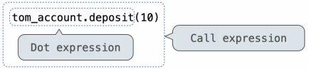

Objects and Classes
Table of Contents
1. Objects
An object can be thought of as a type of complex value that represents information consisting of data and behavior, bundled together to create abstractions. Objects can represent things, but also properties, interactions, and processes.
Objects can have attributes that are bound to values, which can be accessed through a dot expression, as well as methods, which are like attributes that are bound to functions:
# Example: Date object
from datetime import date
day = date(2025, 9, 30) # Date object
y = day.year # year attribute: 2025
m = day.month # month attribute: 9
s = day.strftime('%A %B %d') # strftime() method: 'Tuesday September 30'
This kind of behavior underpins object-oriented programming, which is a way for organizing large programs around the interaction of objects. In Python, every value is an object.
1.1. Object-Oriented Programming
Object-oriented programming is a method for organizing programs that emphasizes data abstraction and bundles together information and related behavior. It operates using a metaphor for computation:
- Each object has and manages its own local state
- You can interact with an object using its methods
- Several objects may all be instances of a common class
- Different classes may relate to each other
A class defines how objects of a particular type behave. An object is an instance of a class, with the class as its type. A method is a function called on an object using a dot expression, such as .append().
1.2. String Representations
In python, all objects produce two string representations: the str which is legible to humans, and the repr which is legible to the Python interpreter. The str and repr strings are often the same, but not always; the repr string is what you see in the Python interpreter.
The repr(object) -> string function returns the canonical string representation of the object. Some objects do not have a simple Python-readable string (often for compound types) — for example, repr(min) returns the placeholder <built-in function min>.
2. Classes
A class describes the behavior of its instances. We can create classes using class statements, like so:
class Account:
def __init__(self, account_holder):
self.balance = 0
self.holder = account_holder
def deposit(self, amount):
self.balance = self.balance + amount
return self.balance
def withdraw(self, amount):
if amount > self.balance:
return 'Insufficient funds'
self.balance = self.balance - amount
return self.balance
The __init__ method is a special method for the function that constructs an instance for that class. deposit is an example of a method for the Account class: notice that it contains self as a parameter, which gives us access to the instance of the class on which the method was invoked.
2.1. Object Construction
To create an instance of a class, we use a constructor. The __init__ method defines the constructor of the class, like so:
a = Account('Alan') # instance of the class Account
2.2. Object Identity
Every object that is an instance of a user-defined class has a unique identity. In other words:
a = Account('John')
b = Account('Jack')
assert a is not b
We can check if something is an instance of a class by using the isinstance() function. For example, isinstance(a, Account) would evaluate to True.
2.3. Attributes
Both instances and classes have attributes, which store variables within the object. Attributes defined by an instance are local only to that instance, whereas class attributes are shared across all instances of a class because they are attributes of the class, not the instance:
class Account:
interest = 0.02 # A class attribute
2.3.1. Attribute Lookup
Attributes can be looked up by dot expressions of the form <expression>.<name>. To evaluate a dot expression:
- Evaluate the
<expression>, which yields the object of the dot expression. <name>is matched against the instance attributes of that object; if an attribute with that name exists, its value is returned.- If not,
<name>is looked up in the class, which yields a class attribute value. - That value is returned unless it is a function, in which case a bound method is returned instead.
In addition to dot expressions, the function getattr(<object>, <name>) can get the attribute <name> within an <object>, and the function hasattr(<object>, <name>) returns a boolean for whether an attribute exists in an object.
2.3.2. Attribute Assignment
Assignment statements with a dot expression on their left-hand side are attribute assignments. If the object is an instance, then the assignment sets an instance attribute. if the object is a class, then the assignment sets a class attribute:
tom = Account('Tom')
tom.interest = 0.08
2.4. Methods
Python distinguishes between functions, and bound methods, which couple together a function and the object on which that method will be invoked. A function defined in a class is a normal function, but calling that function on an instance would result in a bound method:
tom = Account('Tom')
func = type(Account.deposit) # <class 'function'>
method = type(tom.deposit) # <class 'method'>
The main difference comes in calling a function versus calling a method. All invoked methods have access to the object via the self parameter, and so they can all access and manipulate the object's attributes. When using methods, however, the dot notation automatically supplies the first argument, the instance of the class, to the method:
tom = Account('Tom')
tom.deposit(100)
Account.deposit(tom, 100)
2.4.1. Method Calls
Methods are invoked using the dot notation. The way Python evaluates this is by first evaluating the dot expression to get a bound method, and then evaluating the call expression on the result:

2.4.2. Special Methods
Certain names that start and end with two underscores are special because they relate to some predefined built-in behavior:
__init__is a method that is invoked automatically when an object is constructed.__repr__is the method invoked to display and object as a Python expression.__add__is the method invoked to add one object to another.__bool__is the method invoked to convert an object toTrueorFalse.__float__is the method invoked to convert an object to a float.
For example, if we want to implement the addition operation between two instances of some user-defined class, we would need to implement the __add__(self, other) method in the class.
3. Inheritance
Inheritance is a method for relating classes together, often when two similar classes have the same broad purpose but differ in their degree of specialization. The specialized class may have the same attributes as a general class, along with some special-case behavior that is specific to that specialized class:
class <name>(<base class>):
<suite>
Here, the class <name> inherits from a general class <base class>. Conceptually, the new subclass shares attributes with its base class, but may also override certain inherited attributes.
Defining inherited classes is helpful because we can reuse certain shared functionality in the base class, but also specify its differences in behavior.
For example, a CheckingAccount is a specialized type of Account (defined in the previous section):
class CheckingAccount(Account):
withdraw_fee = 1
interest = 0.01
def withdraw(self, amount):
return Account.withdraw(self, amount + self.withdraw_fee)
Notice that we can pass in an instance of a subclass into a function that expects an instance of the base class, because the subclass inherits functionality from the base class. We can use attributes inherited from the base class by accessing the base class with super().
3.1. Multiple Inheritance
Multiple inheritance is when a class inherits from multiple base classes:
class SavingsAccount(Account):
deposit_fee = 2
def deposit(self, amount):
return Account.deposity(self, amount - self.deposit_fee)
class MultipleAccount(CheckingAccount, SavingsAccount): # multiple inheritance
def __init__(self, account_holder):
self.holder = account_holder
self.balance = 1 # a free dollar!
Here, MultipleAccount inherits from both CheckingAccount and SavingsAccount.
3.2. Attribute Lookup
To look up a name in a class:
- If it names an attribute in the class, return the attribute value.
- Otherwise, look up the name in the base class, if there is one.
In other words, when we try to access attributes or bound methods on a subclass, it will return whatever is bound to it in the subclass, and if it isn't bound to anything, it will return the value in the base class.